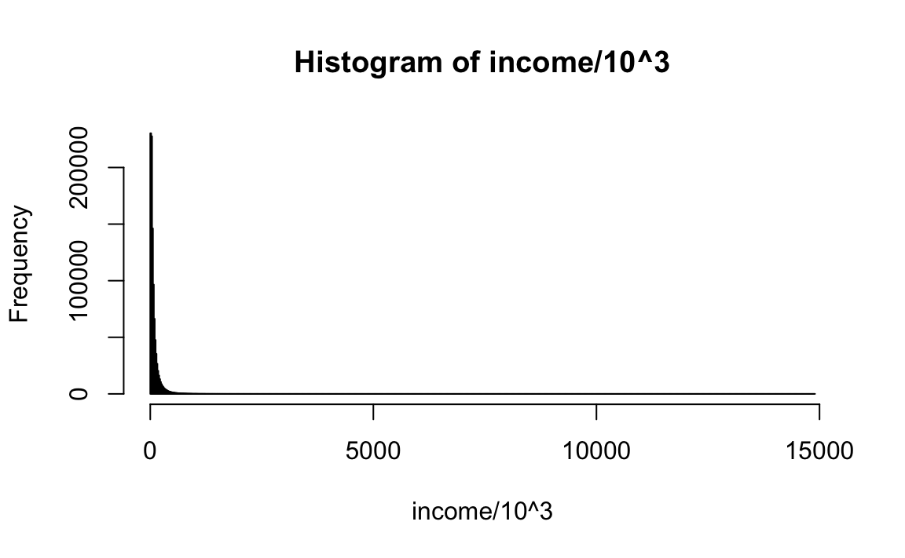
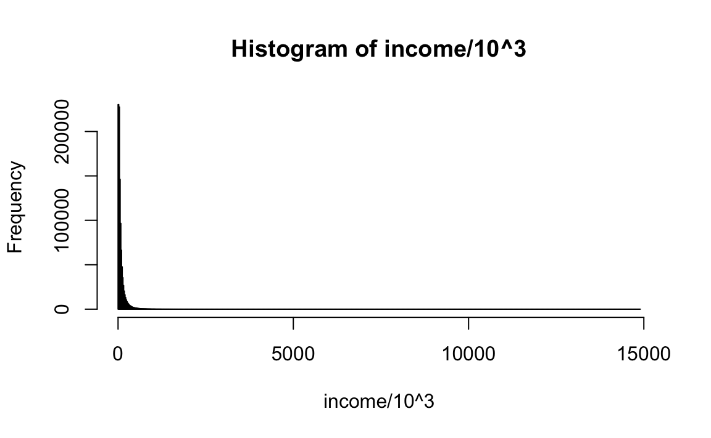
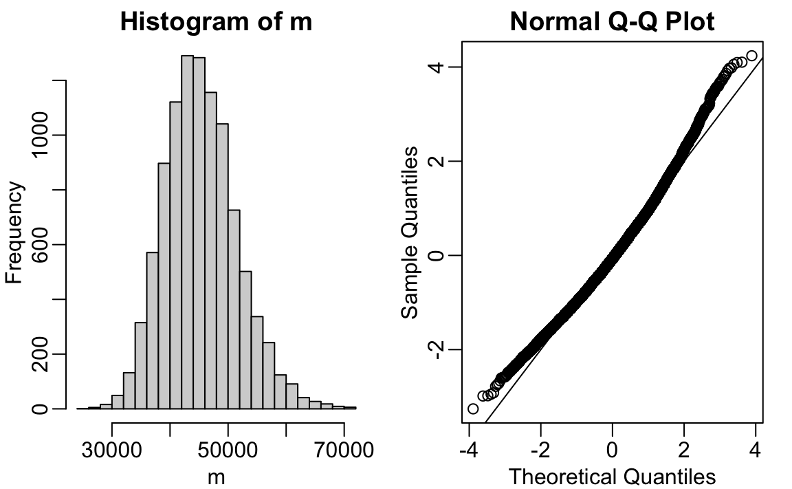

set.seed(1995)
n <- 10^6
income <- 10^(rnorm(n, log10(45000), log10(3)))
hist(income/10^3, nclass = 1000)
CLT provides an useful approach to building confidence intervals and performing hypothesis testing. However, it does not always apply. Here we provide a short introduction to an alternative approach to estimating the distribution of an estimate that does not rely on CLT.
Suppose the income distribution of your population is as follows:
set.seed(1995)
n <- 10^6
income <- 10^(rnorm(n, log10(45000), log10(3)))
hist(income/10^3, nclass = 1000)
The population median is:
m <- median(income)
m
#> [1] 44939Suppose we don’t have access to the entire population, but want to estimate the median \(m\). We take a sample of 100 and estimate the population median \(m\) with the sample median \(M\):
Can we construct a confidence interval? What is the distribution of \(M\) ?
Because we are simulating the data, we can use a Monte Carlo simulation to learn the distribution of \(M\).

If we know this distribution, we can construct a confidence interval. The problem here is that, as we have already described, in practice we do not have access to the distribution. In the past, we have used the Central Limit Theorem, but the CLT we studied applies to averages and here we are interested in the median. We can see that the 95% confidence interval based on CLT
is quite different from the confidence interval we would generate if we know the actual distribution of \(M\):
The bootstrap permits us to approximate a Monte Carlo simulation without access to the entire distribution. The general idea is relatively simple. We act as if the observed sample is the population. We then sample (with replacement) datasets, of the same sample size as the original dataset. Then we compute the summary statistic, in this case the median, on these bootstrap samples.
Theory tells us that, in many situations, the distribution of the statistics obtained with bootstrap samples approximate the distribution of our actual statistic. This is how we construct bootstrap samples and an approximate distribution:
Note a confidence interval constructed with the bootstrap is much closer to one constructed with the theoretical distribution:
For more on the Bootstrap, including corrections one can apply to improve these confidence intervals, please consult the book An introduction to the bootstrap by Efron, B., & Tibshirani, R. J.
1. Generate a random dataset like this:
y <- rnorm(100, 0, 1)Estimate the 75th quantile, which we know is:
qnorm(0.75)with the sample quantile:
quantile(y, 0.75)Run a Monte Carlo simulation to learn the expected value and standard error of this random variable.
2. In practice, we can’t run a Monte Carlo simulation because we don’t know if rnorm is being used to simulate the data. Use the bootstrap to estimate the standard error using just the initial sample y. Use 10 bootstrap samples.
3. Redo exercise 12, but with 10,000 bootstrap samples.